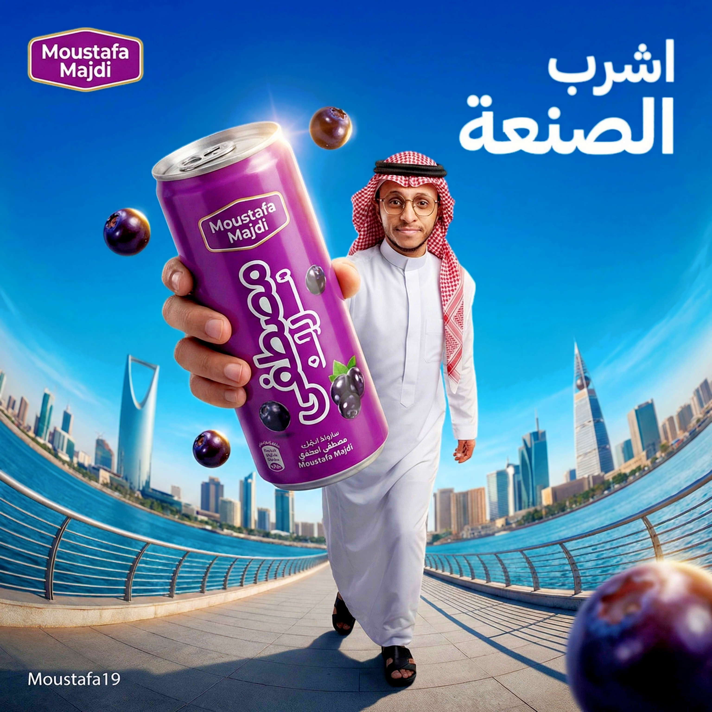
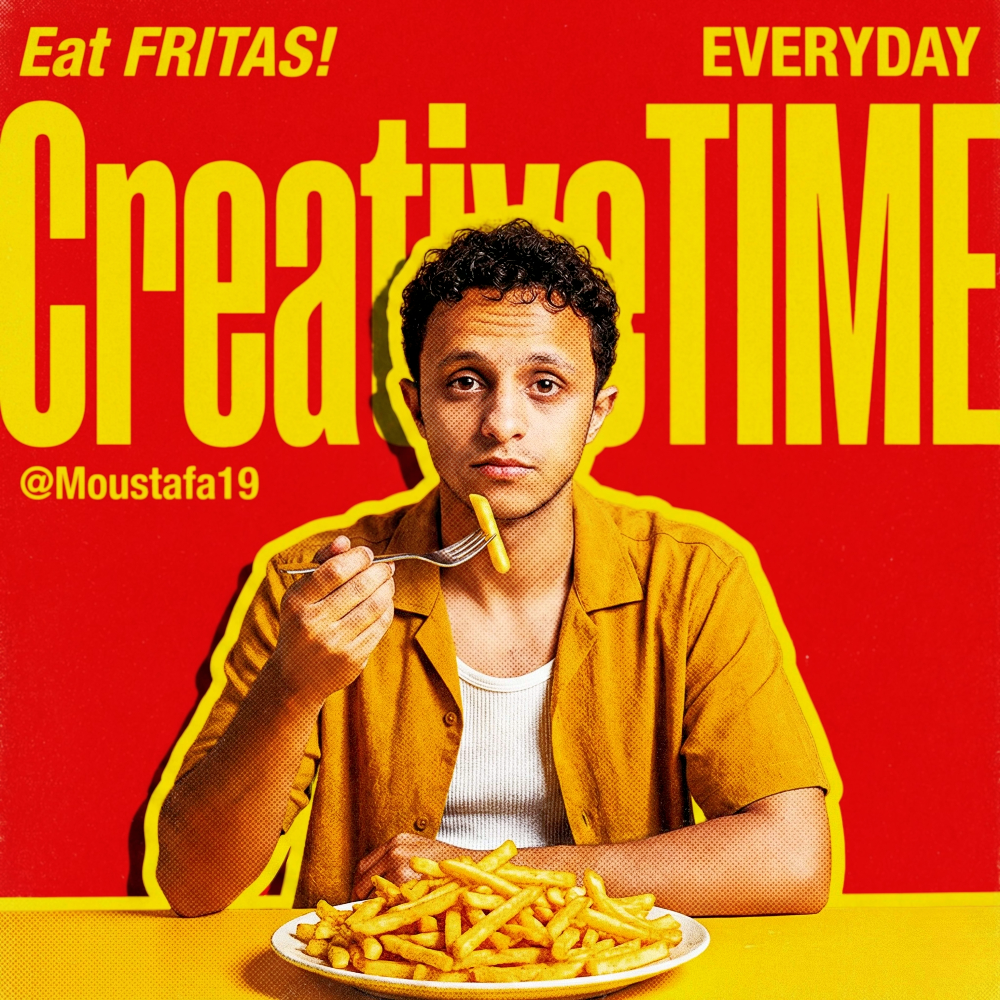
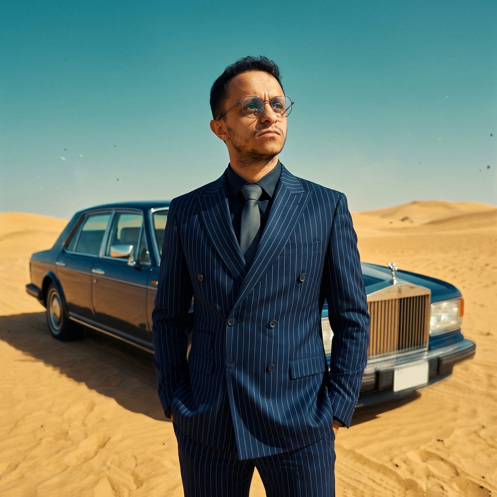

INDEPENDENT / ONGOING
IBN MAJDI
Visual identity, prompt engineering, generative AI research, content systems, workflow design, and educational AI content.
01 / FEATURED WORK
AI video, film visual development, and independent visual experiments.
Visual identity, prompt engineering, generative AI research, content systems, workflow design, and educational AI content.

Structured workflows that bring research, prompting, visual concepts, and production into a usable sequence.
Discuss a project ↗02 / SELECTED AI WORK
A selection of AI-generated videos, cinematic visual development, and independent visual experiments.
Short-form AI-generated visual sequences.
AI-generated environments and visual development for a cinematic project.


A selection of independent generative visual experiments.




